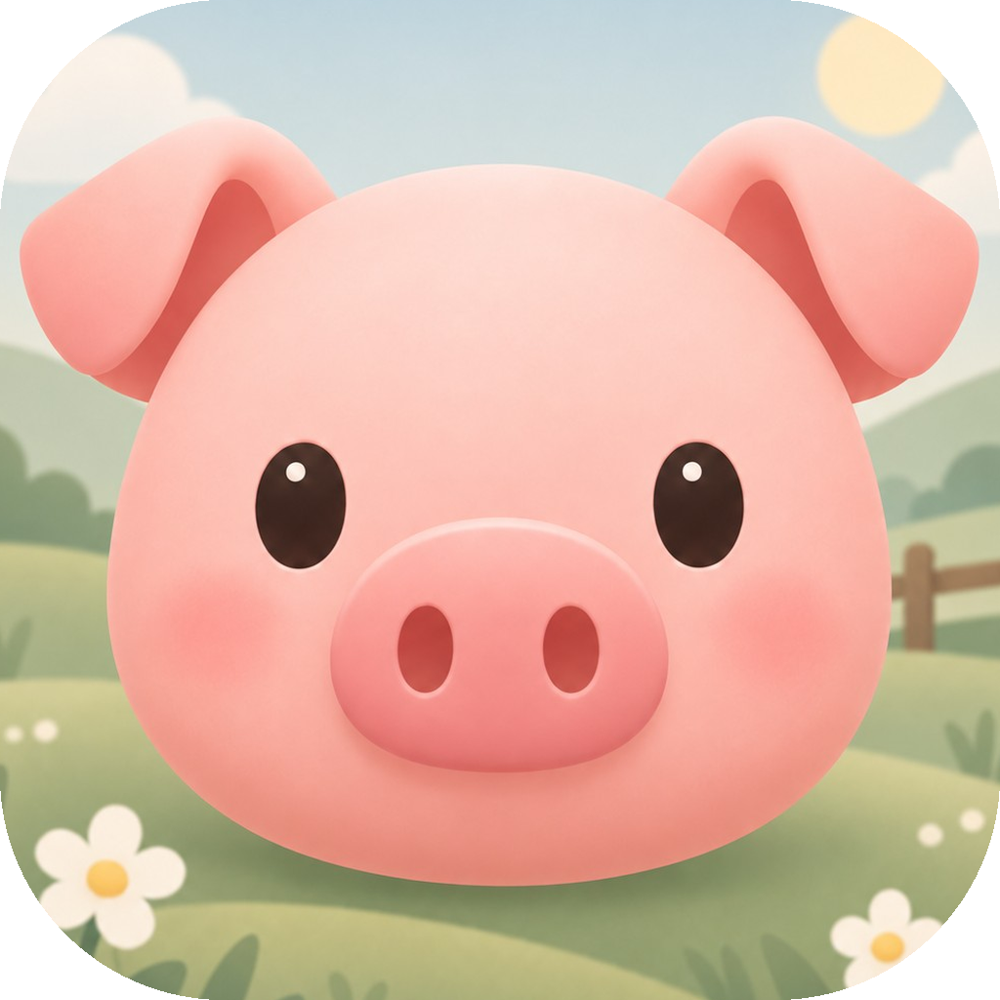
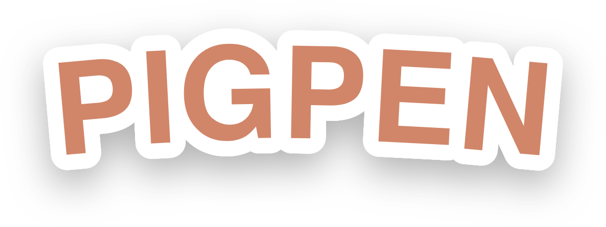

Facts, copy and downloadable assets for writing about Pigpen. No sign-up and no form, and everything here may be used freely in coverage.
| Name | Pigpen |
|---|---|
| Developer | Dan Butvinik — solo, independent |
| Platform | iOS (iPhone), iOS 17 and later |
| Price | Free, with a one-time $3.99 unlock for the full game. No ads, no account, no subscription. |
| Released | 1.0 on 22 August 2026 · 1.2 on 12 September 2026 |
| App Store | apps.apple.com/app/id6798006772 |
| Contact | support@pigpen.app |
| Website | pigpen.app |
Pigpen is a puzzle game for iPhone about fencing in a pig: each board hands you a grid, a pig and a fixed number of fence pieces, and your score is the ground you manage to shut the pig into. Every one of its 108 boards has a best possible pen and washes rainbow when you find it, each of the twelve worlds ends with a second animal standing on the field and two pens to build on one budget, and a daily puzzle, the same board for everybody, arrives each morning. It was made by one person, Dan Butvinik, who drew the twelve worlds and the thirty-six short films between them in code and synthesised every sound in the game, down to the waltz.
The rules take a minute. The pig walks up, down, left and right, never diagonally. Tap a tile to wall it off, or press and drag to lay a whole run, and when you release the pig it tries every route it has; one gap that reaches the edge of the map is an escape. Water counts as a wall you did not have to build, an apple shut inside the pen is worth five tiles and a skull inside costs five, and nothing can be built on any of the three. You have to use every piece you are given, and the pieces run out long before the map does, so the question is never whether you can shut the pig in but how much ground you can shut it in with. Boards pay out up to three stars. The twelve worlds run nine boards each: Mudlark Meadow, Thornwood Thicket, Emberpeak, Cogsworth City, Starfall Reaches, Gloamdeep Caverns, Lantern Carnival, Sunbaked Dunes, Tidepool Cove, Frostwhisker Tundra, Mirebog Fen and Cloudspire Heights. Each one re-skins the ground, the water, the fencing and the two treats: apples and skulls in the meadow are mushrooms and wilted flowers in the thicket, ash and coins and flames on the smoking mountain, and in Cogsworth City the ground is paving and canals, the fencing is wrought iron, and the treats are pizza and a trash can. Every world ends with a boss board that stands a second animal on the field (a stag, a boar, a wyrm, a rat king) and asks for two pens at once, on one budget.
Between the boards there is a story, told in thirty-six short films, three to a world: an opening, a briefing before the boss, and a send-off. A hundred and fourteen shots in all. The meadow's opening has a pig with a cozy, rustic, extremely small home; somebody leaves the gate open; the pig goes out to the market for some new real estate, and the other worlds follow from there. The films are drawn in code rather than painted as pictures. Sky, hills, fence and pig are shapes the game composes as it plays them, and so are the boards and the maps; the twelve world medallions on the universe map are the exception, and those are painted images. The sound is made the same way. Nothing in the game is recorded: a script in the repository synthesises all fourteen noises, a post going into the ground, a hop, the rainbow run, and the one piece of music, a sixteen-bar waltz in C at 96 to the minute, a music box over an oom-pah-pah, which loops under the game. Noises and music each have a switch.
Alongside the worlds there is a daily puzzle: one board a day, the same board for everybody, with a clock on it. Two years of them are written already, and the archive keeps every day there has been. There is also a dressing barn with ten outfits for the pig, a sun hat, a top hat, a crown, sunglasses, spectacles, a ribbon, a sunflower, a scarf, a rosette and wellies, which change nothing but the pig. The game is free to download, and free gets you all of Mudlark Meadow, today's daily puzzle and one new level a day in every other world. A single $3.99 purchase, The Full Game, opens every world and every day in the archive. No ads, no account, no subscription.
Eight clean screens at 1320 × 2868, PNG. No captions, no device frame, no status bar, so crop them as you like. Tap one for the full-size file.
The moment the best pen on a board closes: the ground washes rainbow, the gate opens and the pig runs its lap. 600 pixels wide.


Need something that isn't here, like a specific screen, a quote, or a build before a release? Email support@pigpen.app.
{kind=link}
{kind=link}
{kind=link}
{kind=link}
{kind=link}
{kind=link}
{kind=link}
{kind=link}
{kind=link}
{kind=link}
{kind=link}
{kind=link}
{kind=link}